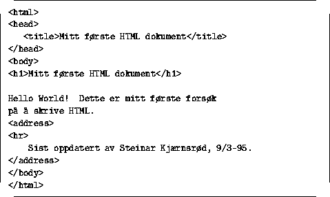

4.2 Basic HTML


Neste: 4.3 Eksterne pekere til
Opp: 4 HTML - Hypertext
Forrige: 4.1 Markup vs. layout
Dette kurset gjør ingen full gjennomgang av HTML. Det er ikke et mål, og
har heller ingen hensikt all den stund det finnes masse god HTML
dokumentasjon ute på nettet. Til slutt i dette avsnittet finnes pekere
til slik informasjon.
Figur 4 viser et lite HTML dokument som inneholder et
minimum av hva et HTML dokument bør ineholde, nemlig en korrekt
header, en kropp og en avslutning. Lurer du på hvordan dette
dokumentet tar seg ut, kan du følge denne linken.

Figur 4: ``Hello World'' som HTML dokument
HTML er et enkelt språk, og det tar ikke lang tid å få oversikt over
de såkalte tagene som kan benyttes og hvilken funksjon de har.
Det tar allikevel lang tid å bli en god HTML programmerer, for det
er en rekke ting man bør tenke på og kanskje aller helst ha erfart
selv når man lager HTML presentasjoner.
Disse tingene har ingen ting med teknikk å gjøre, men med form og
struktur. Et par tommelfingerregler kommer her:
- Ikke forutsett forutgående kontekst hos leseren. Husk at Weben
er dynamisk og uten nivåer, og at man kan linke fritt inn til
vilkårlige filer som er en del av en større presentasjon.
- Gi alle dokumenter en ordentlig tittel vha <title> tagen.
Dokumenttitler kan benyttes av søkemaskinerier og programmer
som lager automatiske innholdsfortegnelser.
- IKKE bruk strukturtager som <h1>, <h2> osv. for å tvinge
fram en spesiell layout! Husk ``markup vs. layout''.
- Prøv å finne naturlige ankertekster i hyperlinkene. Unngå
tekster av typen ``Klikk her''. Husk at det ikke er alle som
har noe å klikke med!
- Moderer bruken av grafikk. Tenk på hvilket budskap du egentlig
vil bringe og hvor viktig evt. grafikken er for dette budskapet.
Det finnes teknikker for å redusere størrelsen i GIF bilder uten
at kvalitet forringes nevneverdig.
- Hvis du lager en større presentasjon, forsøk å dele den opp på
en naturlig måte og sett opp hyperlinker mellom de enkelte delene.
Det skal være unødvendig for leseren å gå opp til en meny bare
for å gå videre til ``neste side'' eller ``neste dokument''.
Neste: 4.3 Eksterne pekere til
Opp: 4 HTML - Hypertext
Forrige: 4.1 Markup vs. layout
© Oslonett AS 15/05-95, 11:16:50